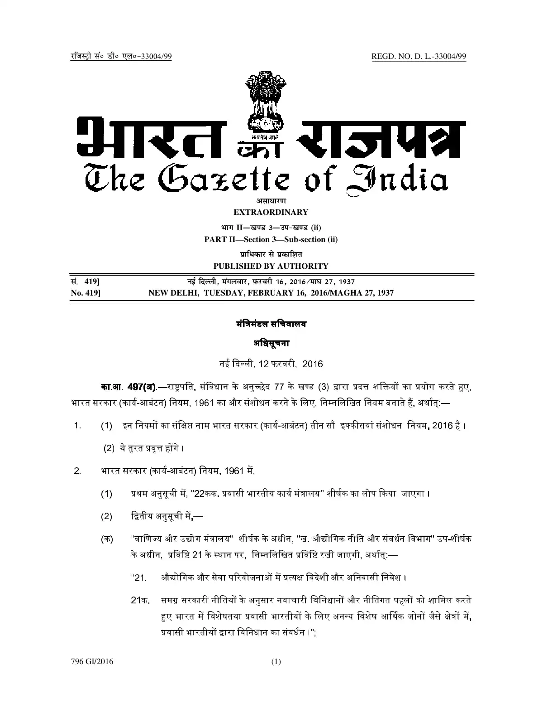
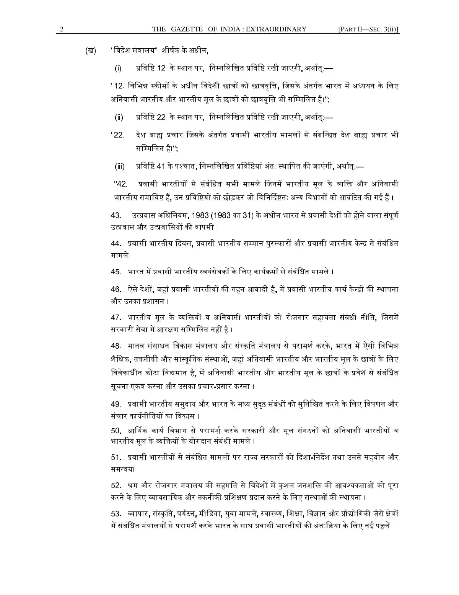
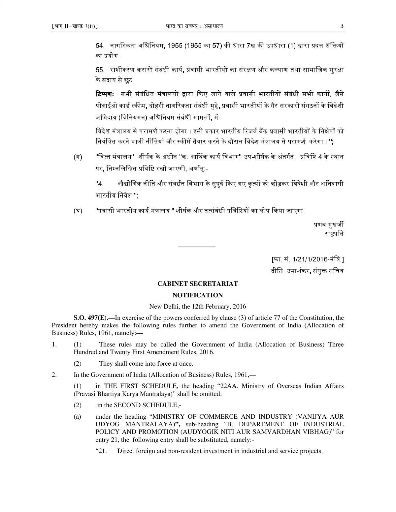
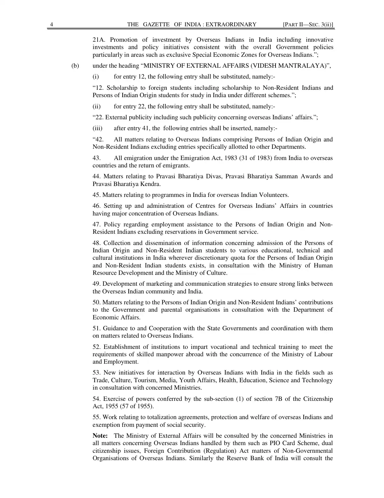
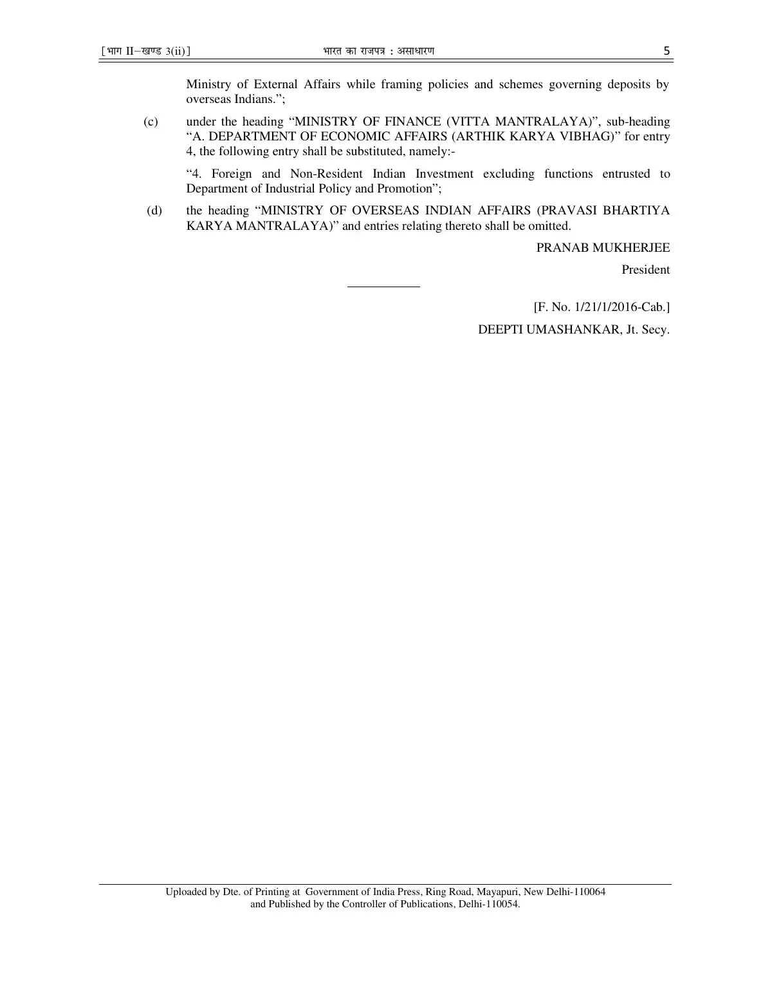

Amendment #321 (S.O. 497(E), 2016)
7 changes: 1 to the First Schedule, 6 to the Second Schedule. 7 applied
What it did to the ministries
- absorbedOverseas Indian Affairs folds into External Affairs. change 1, 3, 4, 5, 7 · histories: Overseas Indian Affairs, External Affairs
The order, page by page
Page 1 of 5

Page 2 of 5

Page 3 of 5

12Schedule 1 › Ministry of Overseas Indian Affairs
applied at schedule 1 › ministry 22AA in the Rules after #321
Schedule 2 › MINISTRY OF COMMERCE AND INDUSTRY › DEPARTMENT OF INDUSTRIAL POLICY AND PROMOTION › entry 21
- 21. Direct foreign and non-resident investment in industrial and service projects.
- 21A. Promotion of investment by Overseas Indians in India including innovative investments and policy initiatives consistent with the overall Government policies particularly in areas such as exclusive Special Economic Zones for Overseas Indians.
applied at schedule 2 › ministry MINISTRY OF COMMERCE AND INDUSTRY › department B › group_heading II › entry 21 in the Rules after #321
read page break
Page 4 of 5

345Schedule 2 › MINISTRY OF EXTERNAL AFFAIRS › entry 12
- 12. Scholarship to foreign students including scholarship to Non-Resident Indians and Persons of Indian Origin students for study in India under different schemes.
applied at schedule 2 › ministry MINISTRY OF EXTERNAL AFFAIRS › entry 12 in the Rules after #321
Schedule 2 › MINISTRY OF EXTERNAL AFFAIRS › entry 22
- 22. External publicity including such publicity concerning overseas Indians’ affairs.
applied at schedule 2 › ministry MINISTRY OF EXTERNAL AFFAIRS › entry 22 in the Rules after #321
after Schedule 2 › MINISTRY OF EXTERNAL AFFAIRS › entry 41
- 42. All matters relating to Overseas Indians comprising Persons of Indian Origin and Non-Resident Indians excluding entries specifically allotted to other Departments.
- 43. All emigration under the Emigration Act, 1983 (31 of 1983) from India to overseas countries and the return of emigrants.
- 44. Matters relating to Pravasi Bharatiya Divas, Pravasi Bharatiya Samman Awards and Pravasi Bharatiya Kendra.
- 45. Matters relating to programmes in India for overseas Indian Volunteers.
- 46. Setting up and administration of Centres for Overseas Indians’ Affairs in countries having major concentration of Overseas Indians.
- 47. Policy regarding employment assistance to the Persons of Indian Origin and Non- Resident Indians excluding reservations in Government service.
and 9 more
- 48. Collection and dissemination of information concerning admission of the Persons of Indian Origin and Non-Resident Indian students to various educational, technical and cultural institutions in India wherever discretionary quota for the Persons of Indian Origin and Non-Resident Indian students…
- 49. Development of marketing and communication strategies to ensure strong links between the Overseas Indian community and India.
- 50. Matters relating to the Persons of Indian Origin and Non-Resident Indians’ contributions to the Government and parental organisations in consultation with the Department of Economic Affairs.
- 51. Guidance to and Cooperation with the State Governments and coordination with them on matters related to Overseas Indians.
- 52. Establishment of institutions to impart vocational and technical training to meet the requirements of skilled manpower abroad with the concurrence of the Ministry of Labour and Employment.
- 53. New initiatives for interaction by Overseas Indians with India in the fields such as Trade, Culture, Tourism, Media, Youth Affairs, Health, Education, Science and Technology in consultation with concerned Ministries.
- 54. Exercise of powers conferred by the sub-section (1) of section 7B of the Citizenship Act, 1955 (57 of 1955).
- 55. Work relating to totalization agreements, protection and welfare of overseas Indians and exemption from payment of social security.
- Note: The Ministry of External Affairs will be consulted by the concerned Ministries in all matters concerning Overseas Indians handled by them such as PIO Card Scheme, dual citizenship issues, Foreign Contribution (Regulation) Act matters of Non-Governmental Organisations of Overseas Indians.…
applied at schedule 2 › ministry MINISTRY OF EXTERNAL AFFAIRS › entry 42 in the Rules after #321
read page break
Page 5 of 5

67Schedule 2 › MINISTRY OF FINANCE › DEPARTMENT OF ECONOMIC AFFAIRS › entry 4
- 4. Foreign and Non-Resident Indian Investment excluding functions entrusted to Department of Industrial Policy and Promotion
applied at schedule 2 › ministry MINISTRY OF FINANCE › department A › group_heading I › entry 4 in the Rules after #321
Schedule 2 › MINISTRY OF OVERSEAS INDIAN AFFAIRS
applied at schedule 2 › ministry in the Rules after #321
How this document was read
From the Government of India (Allocation of Business) Rules, 1961 and their amendments, as published by the Cabinet Secretariat (cabsec.gov.in), read by orgpedia. The readings of the older scanned gazettes have known gaps.